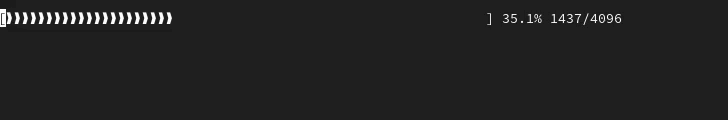

19. Индикатор хода выполнения.
Условие:
Нужно написать код, который реализует индикатор хода выполнения, какого-то процесса. Это визуальный элемент, показывающий, какая доля задачи была выполнена.
Пример программы:

Код:
import random, time
def getProgressBar(progress, total, barWidth=60): # в функции значение barWidth=60 задаётся по-умолчанию и означает количество баров
progressBar = ''
progressBar += '[' # значок начала полосы прогресса
if progress > total:
progress = total
numberOfBars = int((progress / total) * barWidth) # определим количество баров
progressBar += BAR * numberOfBars # полоса из баров
progressBar += ' ' * (barWidth - numberOfBars) # пустое место в полосе прогресса
progressBar += ']' # закрытие полосы прогресса
percentComplete = round(progress / total * 100, 1) # вычислим процент выполнения
progressBar += ' ' + str(percentComplete) + '%' # добавим процент выполнения
progressBar += ' ' + str(progress) + '/' + str(total) # соберём строку для вывода
return progressBar
def main():
bytesDownloaded = 0
downloadSize = 4096
while bytesDownloaded < downloadSize:
bytesDownloaded += random.randint(0, 100) # рандомное количество байт
barStr = getProgressBar(bytesDownloaded, downloadSize)
print(barStr, end='')
time.sleep(0.2)
print('\r', end='') # после каждого вывода прогресса на печать происходит возврат каретки в начало строки
print()
BAR = "❱"
if __name__ == '__main__':
print()
main()